How does thoracic and lumbar curve change relative to a vertical axis?
We need to look at elevation angles of the 2 planar points (‘sp’ and ‘su’) in the 5 spinal planes (1-5). We approximate a thoracic curve as difference in elevation angles of 5th and 4th spinal planes that are constructed based on the C7-T7 and T7-T12 spinal segments (sp5-sp4). For a lumbar curve we take a difference in elevation angles of 3rd and 2nd spinal planes that are constructed based on the T12-L4 and L4-mid pelvic spinal segments (sp3-sp2).
Summary. Anterior angles in the thoracic and lumbar spinal areas
In a sagittal plane a thoracic area of the spine has an outwards curve and as expected we have a range of negative angles between C7T7 and T7T12 spinal segments (sp5 - sp4 planes). In the starting standing position (‘2001’ code) the 1st group has about 10 degrees larger min/max range of angles (20 vs. 9 degrees), a larger (about 3 degrees) standard deviation and only 2 degrees larger mean value than the 2nd group. Also the mean values in the 1st group for the movement are about 4.7 degrees larger than in the 2nd and the min/max range is about 32 versus 26 degrees. In other words, the thoracic curve seems to be less pronounced in the 2nd group than in the 1st.
A lumbar area in a sagittal plane of the spine has an inwards curve and as expected we have a range of positive angles between T12L4 and L4Sacrum spinal segments (sp3 - sp2 planes). In the starting standing position (‘2001’ code) the 1st group has slightly larger min/max range of angles (13.7 vs. 11.8 degrees) and an inwards curve about 1 degree whereas the 2nd group has a mean value for the outwards curve about 0.8 degrees. For the movement 1st group has about 5.6 degrees larger mean (15.2 vs. 9.6) and about 16 degrees larger value range (57 vs. 41). Similarly to the thoracic area, the 1st group seem to have more pronounced lumbar curve than the 2nd group.
In other words, there is a difference between 1st and 2nd group, e.g. about 2 degrees difference in mean values in standing position that scales to differences of 4.7 and 5.56 degrees during the movement for thoracic and lumbar values respectively.
Than data is grouped by trial identities we can notice that in most trials the difference between the curve value in standing position and mean value during the 2nd step of the Short Form is clearly larger for the thoracic curve than for the lumbar curve; the ‘id_203’, ‘id_111’ and ‘id_103’ being exceptions. Also we can note that comparably to all trials, trials ‘id_114’ and ‘id_112’ have unusually large values for the thoracic curve whereas ‘id_211’ shows an unusually small value. The lumbar curve seems to vary much stronger across trials than the thoracic curve. The trials ‘id_112’ and ‘id_111’ show extreme values: the former has outwards directed lumbar curve (negative values) and latter has large positive values (the normal inwards directed lumbar curve).
Than the data is grouped by 11 sub-movements as expected we see a group difference for the range of values: 1st group has larger thoracic and lumbar curves across the 11 sub-movements than the 2nd group. The 5th and 6th sub-movements show the smallest mean differences for thoracic curve 2nd the largest. The lumbar curve in the 2nd group has an unusually small mean in the 1st sub-movement, a large mean difference in the 11th and 6th sub-movements and a small difference in the 5th, 2nd and 4th sub-movements.
Than we look at two intervals with the symmetrical movement we see that within the trials the values in lumbar and thoracic curves are symmetrical in 1st and the 2nd intervals. Again the ‘id_114’ trial has unusually large values and ‘id_211’ small for thoracic curve. For lumbar curve ‘id_111’ has very high values, ‘id_211’, ‘id_204’ and ‘id_205’ small, and ‘id_112’ outwards directed curve.
Thoracic area (C7-T12), anterior tilting >> 11 sub-movements
| mean | sd | sem | n | NAs | max | min | |
|---|---|---|---|---|---|---|---|
| 1st group | -24.63 | 6.604 | 0.0278 | 56414 | 2113 | -10.73 | -42.87 |
| 2nd group | -19.93 | 5.026 | 0.024 | 43749 | 1123 | -4.105 | -29.92 |
| 2001-1st | 11.02 | 5.811 | 1.553 | 14 | 0 | 19.85 | 0.2102 |
| 2001-2nd | 9.39 | 2.527 | 0.762 | 11 | 0 | 14.82 | 5.775 |
Lumbar area (T12-Sacrum), anterior tilting >> 11 sub-movements
| mean | sd | sem | n | NAs | max | min | |
|---|---|---|---|---|---|---|---|
| 1st group | 15.17 | 10.26 | 0.0433 | 56303 | 2224 | 47.35 | -9.566 |
| 2nd group | 9.576 | 7.458 | 0.0357 | 43692 | 1180 | 32.98 | -7.548 |
| 2001-1st | 0.9663 | 4.83 | 1.291 | 14 | 0 | 6.454 | -7.208 |
| 2001-2nd | -0.7714 | 3.922 | 1.183 | 11 | 0 | 5.439 | -6.396 |
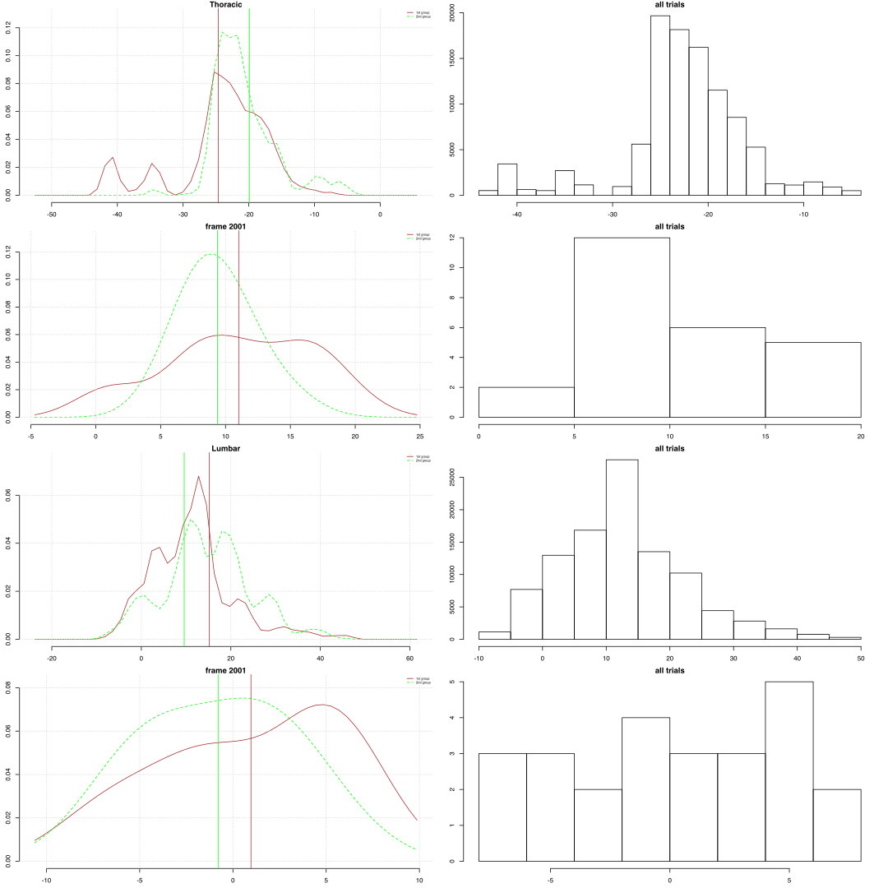
Summary. Lateral angles in the thorasic and lumbar areas
In a coronal plane thoracic and lumbar areas of the spine should not show any tilting towards left or right sides. All negative results would indicate that we have an outwards-directed curve to the right (a left tilt) and positive values would mark an outwards curve to the left (a right tilt).
As expected we have 1 and 0 degree mean thoracic values and 0.5 and -1 degree mean lumbar values for the 1st and 2nd group respectively. Notably, we have a 1 degree tilting leftwards for the thoracic curve in standing position (‘2001’ code) in both groups. Also the ranges of thoracic values in the 1st group are biased by about 5 degrees towards leftward tilt and in the 2nd group towards the rightward tilt by about 2 degrees. For the ranges in lumbar values the 1st group shows a bias towards rightwards tilting by about 8 degrees.
Than data is grouped by trial identities we can notice that thoracic values in trials ‘id_114’ show comparatively large tilt rightwards; the lumbar values in trials ‘id_105’, ‘id_112’ and ‘id_208’ show unusually large rightward tilting and ‘id_205’, ‘id_115’ and ‘id_206’ a leftward tilt.
Than the data is grouped by 11 sub-movements we see a general difference for the range of values: 1st group tend to have a rightward tilt in thoracic values apart from the 2nd and 10th sub-movements. The lumbar curves in the 9th, 10th and 11th sub-movements a rightwards tilt in the both groups. Whereas in the 1st, 2nd, and from the 4th, to 7th sub-movements both groups show the leftwards tilt.
Than we look at two intervals with the symmetrical movement we see that within the trials the values in lumbar and thoracic curves are symmetrical in 1st and the 2nd intervals. Again the ‘id_114’ trial has unusually large thoracic values in both intervals. Notably, within the individual trials the ranges of lumbar values are tighter than for thoracic and lumbar values for the 1st interval are always tilting more leftwards comparing to the second interval. In other words, it seems that the left to right bow stance stepping is associated with tendency to lean leftwards in the lumbar curve.
Than we look at 4 phases of the 2 intervals we can notice that with exception of ‘id_112’ and ‘id_204’ the 1st and 3rd phases of two intervals (4th/8th and 6th/10th sub-movements) have tighter value ranges for the lumbar area than 2nd and 4th phases, e.g. there is less lumbar movement during these phases. Also within individual trials, the time series for thoracic and lumbar areas are symmetrical around horizontal lines between 1st and 2nd intervals.
Thoracic area (C7-T12), lateral tilting >> 11 sub-movements
| mean | sd | sem | n | NAs | max | min | |
|---|---|---|---|---|---|---|---|
| 1st group | 1.028 | 2.725 | 0.0115 | 56414 | 2113 | 11.13 | -6.123 |
| 2nd group | -0.0532 | 2.458 | 0.0118 | 43749 | 1123 | 6.349 | -8.019 |
| 2001-1st | -1.095 | 1.529 | 0.4088 | 14 | 0 | 1.127 | -3.789 |
| 2001-2nd | -1.197 | 1.219 | 0.3675 | 11 | 0 | 0.7793 | -3.423 |
Lumbar area (T12-Sacrum), lateral tilting >> 11 sub-movements
| mean | sd | sem | n | NAs | max | min | |
|---|---|---|---|---|---|---|---|
| 1st group | 0.5341 | 8.197 | 0.0345 | 56303 | 2224 | 30.85 | -23.1 |
| 2nd group | -1.084 | 6.291 | 0.0301 | 43692 | 1180 | 16.72 | -16.89 |
| 2001-1st | -0.736 | 1.243 | 0.3321 | 14 | 0 | 1.451 | -3.216 |
| 2001-2nd | -0.3014 | 1.459 | 0.4398 | 11 | 0 | 2.703 | -1.905 |
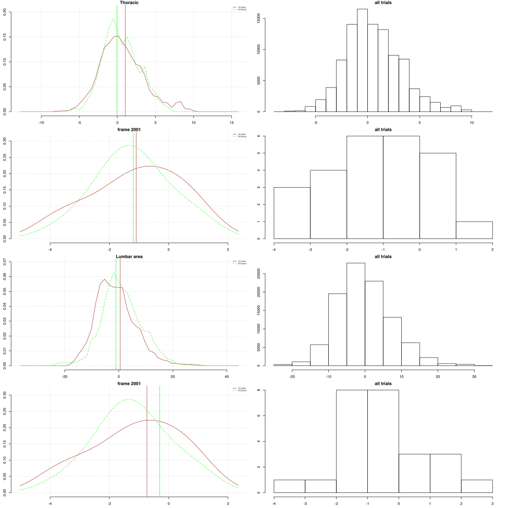
Posterior-anterior angles in the thoracic and lumbar areas, grouped by id-trials
Below are boxplots of the angles between spinal segments in lumabr and thoracic reas across different trials for the entire 2nd step of the Short Form. Brown color represents the 1st group and green the 2nd. Horizontal axes are given in degrees so that negative values correspond to an outward curve and negative to an inward curve. The vertical axes represent grouping factor – identity of the trial.
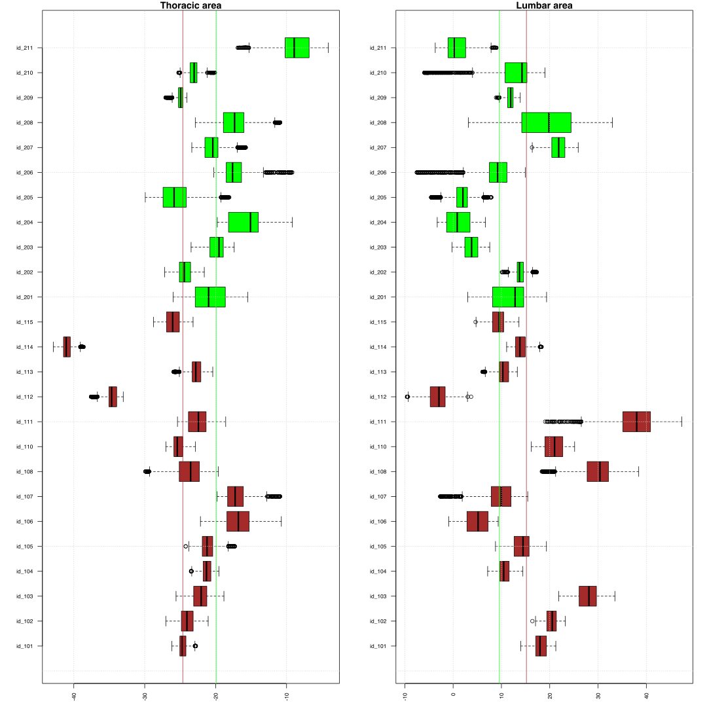
Thoracic area (C7-T12), anterior tilting >> 11 sub-movements
| mean | sd | sem | n | NAs | max | min | |
|---|---|---|---|---|---|---|---|
| 1st group | -24.53 | 6.354 | 1.698 | 14 | 0 | -16.92 | -40.97 |
| 2nd group | -19.82 | 4.901 | 1.478 | 11 | 0 | -8.891 | -25.28 |
Lumbar area (T12-Sacrum), anterior tilting >> 11 sub-movements
| mean | sd | sem | n | NAs | max | min | |
|---|---|---|---|---|---|---|---|
| 1st group | 16 | 10.67 | 2.851 | 14 | 0 | 37.66 | -3.179 |
| 2nd group | 9.724 | 7.212 | 2.175 | 11 | 0 | 21.62 | 1.037 |
Density plots of the angle values for the entire 2nd step (11 sub-movements) grouped by the trial identities. Brown color represents the thoracic angles for the 1st group and green the 2nd; vertical lines mark mean value of the corresponding trials; blue vertical lines mark the angle values in the beginning of the form.
Dark orange color represents the lumbar angles for the 1st group and dark green the 2nd; vertical lines mark mean value of the corresponding trials; blue dotted vertical lines mark the angle values in the beginning of the form.

Lateral tilt in the thoracic and lumbar areas, grouped by id-trials
Below are boxplots of the angles between spinal segments in lumabr and thoracic reas across different trials for the entire 2nd step of the Short Form. Brown color represents the 1st group and green the 2nd. Horizontal axes are given in degrees so that negative values correspond to a rightwards-directed curve (a left tilt) and positive values mark a lefttwards-directed curve (a right tilt). The vertical axes represent grouping factor – identity of the trial.
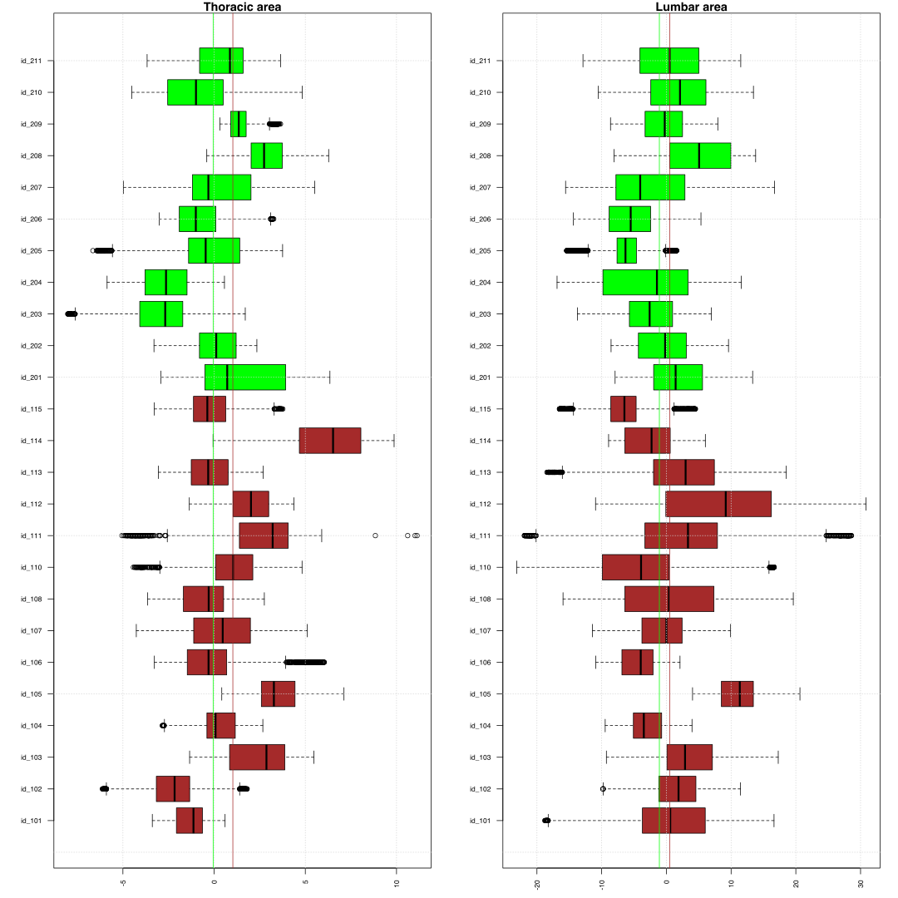
Thoracic area (C7-T12), lateral tilting >> 11 sub-movements
| mean | sd | sem | n | NAs | max | min | |
|---|---|---|---|---|---|---|---|
| 1st group | 0.973 | 2.178 | 0.5822 | 14 | 0 | 6.053 | -2.276 |
| 2nd group | -0.0539 | 1.704 | 0.5138 | 11 | 0 | 2.848 | -2.907 |
Lumbar area (T12-Sacrum), lateral tilting >> 11 sub-movements
| mean | sd | sem | n | NAs | max | min | |
|---|---|---|---|---|---|---|---|
| 1st group | 0.6914 | 4.906 | 1.311 | 14 | 0 | 11.43 | -6.067 |
| 2nd group | -1.005 | 3.296 | 0.9939 | 11 | 0 | 4.916 | -6.273 |
Density plots of the angle values for the entire 2nd step (11 sub-movements) grouped by the trial identities. Brown color represents the thoracic angles for the 1st group and green the 2nd; vertical lines mark mean value of the corresponding trials; blue vertical lines mark the angle values in the beginning of the form.
Dark orange color represents the lumbar angles for the 1st group and dark green the 2nd; vertical lines mark mean value of the corresponding trials; blue dotted vertical lines mark the angle values in the beginning of the form.

Anterior tilt in the thoracic and lumbar areas, grouped by sub-movements
Also we can look at differences in the angles across the 11 sub-movements without differentiating between individual trials. Again, the brown color represents the 1st group and green the 2nd. Horizontal axes are given in degrees of the angles and the vertical axes represent grouping factor – a number of the sub-movement.

Thoracic area (C7-T12), anterior tilting >> 11 sub-movements
| mean | sd | sem | n | NAs | max | min | |
|---|---|---|---|---|---|---|---|
| 1st group | -24.62 | 0.7024 | 0.2118 | 11 | 0 | -23.28 | -25.89 |
| 2nd group | -20 | 1.061 | 0.3199 | 11 | 0 | -17.93 | -21.81 |
Lumbar area (T12-Sacrum), anterior tilting >> 11 sub-movements
| mean | sd | sem | n | NAs | max | min | |
|---|---|---|---|---|---|---|---|
| 1st group | 15.09 | 1.473 | 0.444 | 11 | 0 | 16.52 | 11.45 |
| 2nd group | 9.668 | 1.837 | 0.5538 | 11 | 0 | 11.62 | 5.044 |
Density plots of the angle values grouped by the 11 sub-movements. Brown color represents the 1st group and green the 2nd; vertical lines mark mean value of the corresponding sub-movement for 1st and 2nd group. The 2nd and 3rd rows capture a symmetrical motion sequence: from the left into right bow stance and from the right into left.
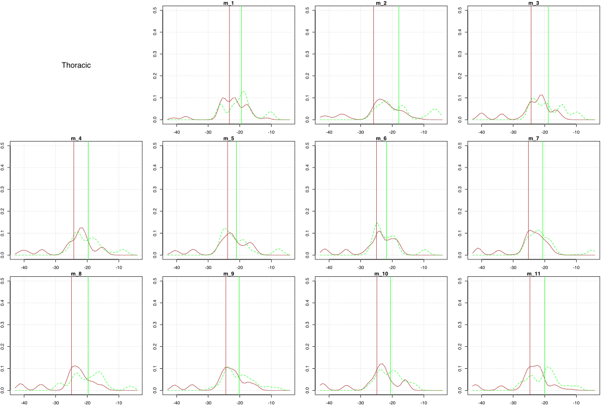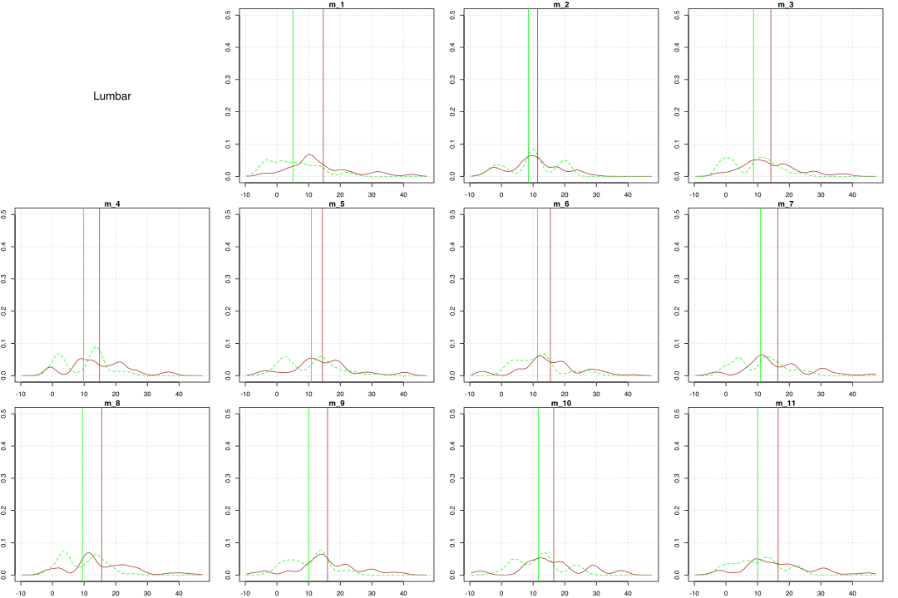
Lateral tilt in the thoracic and lumbar areas, grouped by sub-movements
Also we can look at differences in the angles across the 11 sub-movements without differentiating between individual trials. Again, the brown color represents the 1st group and green the 2nd. Horizontal axes are given in degrees of the elevation angles and the vertical axes represent grouping factor – a number of the sub-movement.
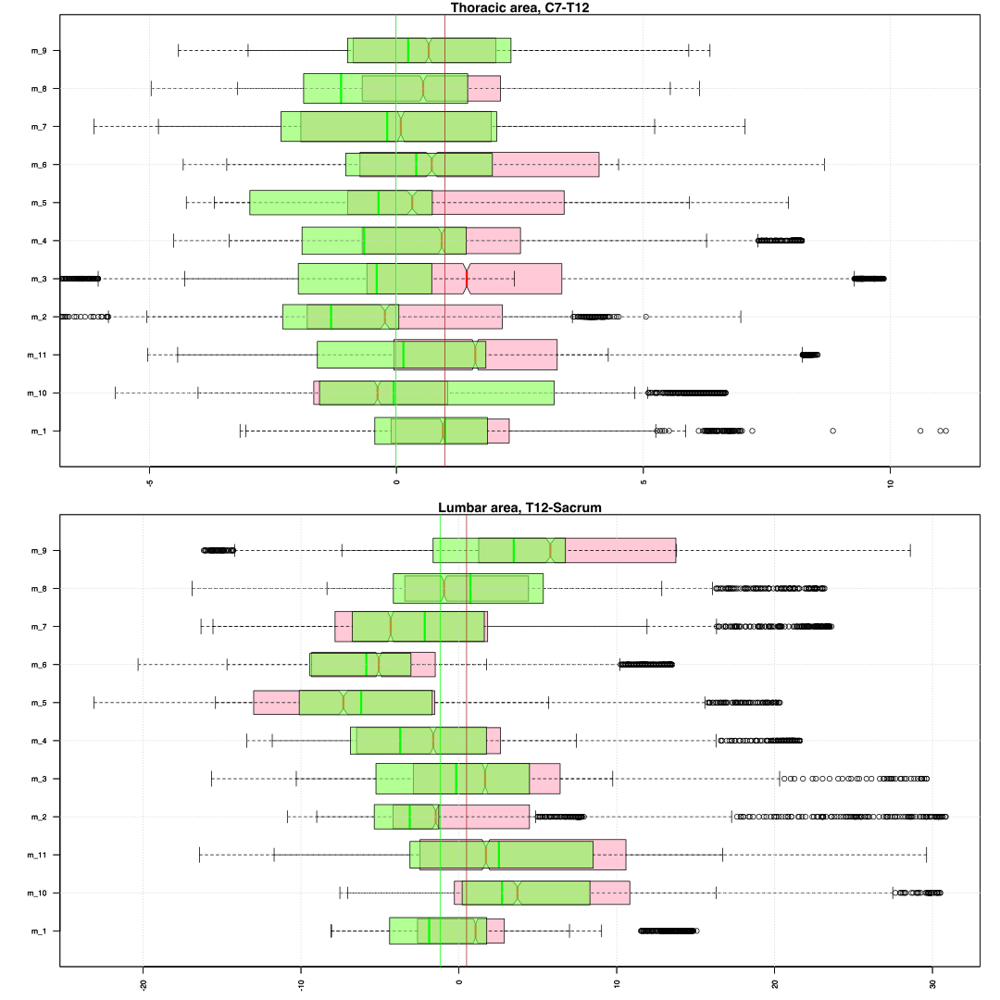
Thoracic area (C7-T12), lateral tilting >> 11 sub-movements
| mean | sd | sem | n | NAs | max | min | |
|---|---|---|---|---|---|---|---|
| 1st group | 0.9827 | 0.7001 | 0.2111 | 11 | 0 | 1.987 | -0.058 |
| 2nd group | -0.0155 | 0.6492 | 0.1957 | 11 | 0 | 0.9248 | -0.9559 |
Lumbar area (T12-Sacrum), lateral tilting >> 11 sub-movements
| mean | sd | sem | n | NAs | max | min | |
|---|---|---|---|---|---|---|---|
| 1st group | 0.4911 | 4.197 | 1.265 | 11 | 0 | 7.396 | -6.959 |
| 2nd group | -1.187 | 3.22 | 0.9708 | 11 | 0 | 3.742 | -6.079 |
Density plots of the angle values grouped by the 11 sub-movements. Brown color represents the 1st group and green the 2nd; vertical lines mark mean value of the corresponding sub-movement for 1st and 2nd group. The 2nd and 3rd rows capture a symmetrical motion sequence: from the left into right bow stance and from the right into left.
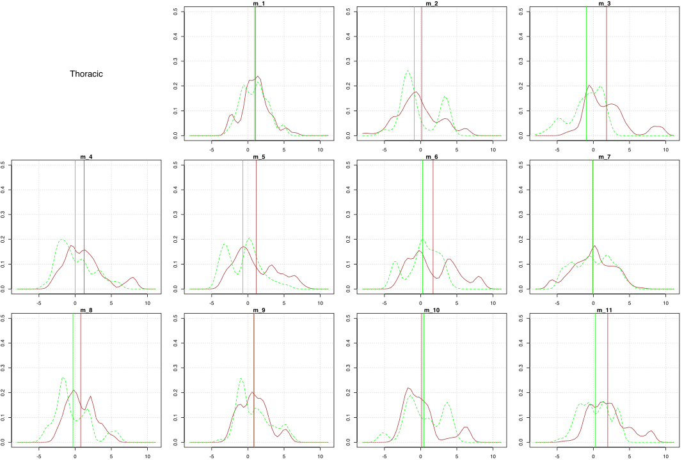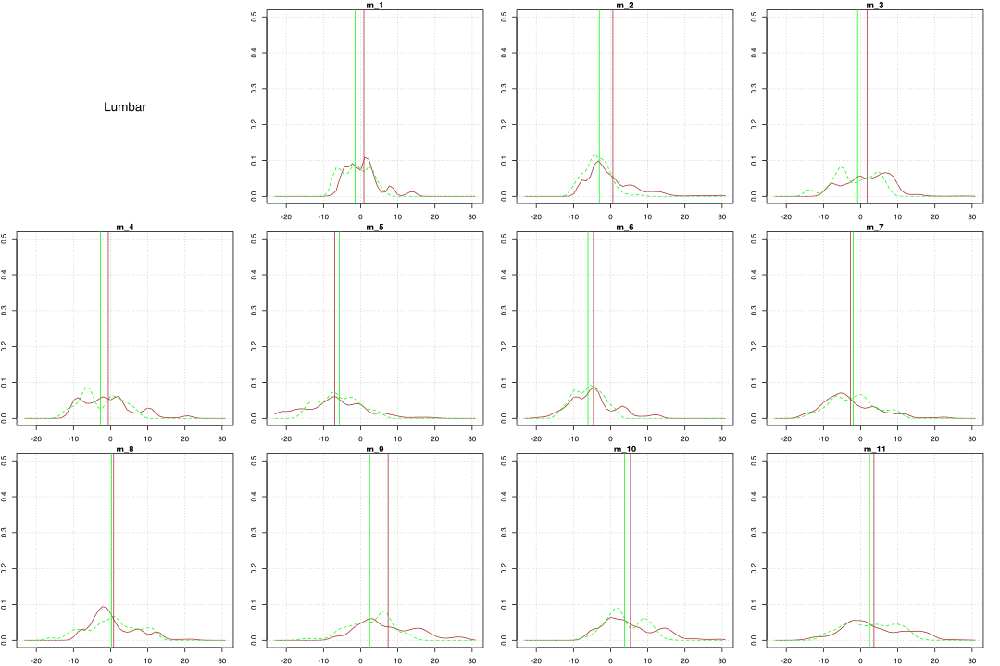
Anterior tilt in the thoracic and lumbar areas, grouped by id-trials and sub-movements
Below are boxplots for two intervals of the 2nd step that capture symmetrical body motion: from the left to right bow stance and from the right to left bow stance. The boxplots of these intervals are superimposed for each of the trials. The 1st interval is marked by green color and the 2nd by red (color is not associated with groups).
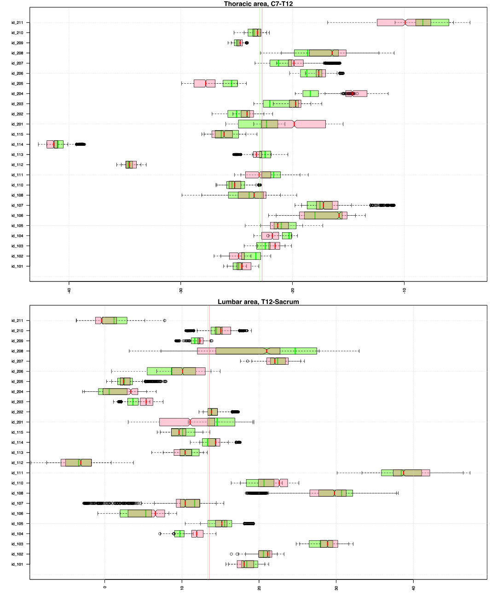
Also, we can differentiate between the different sub-movements within the two intervals and look at them individually. Below are two columns of the boxplots with 4 rows that represent consecutive phases of our two intervals. The 1st column represents the movement from the left to right bow stance (4th - 7th sub-movements), the 2nd column represents the movement from the right to left bow stance (8th - 11th sub-movements).
Brown and green color mark data of the thoracic angles for the 1st and 2nd group. Pale semi-transparent yellow and cyan-green colors mark angles of the lumbar for the 1st and 2nd group.
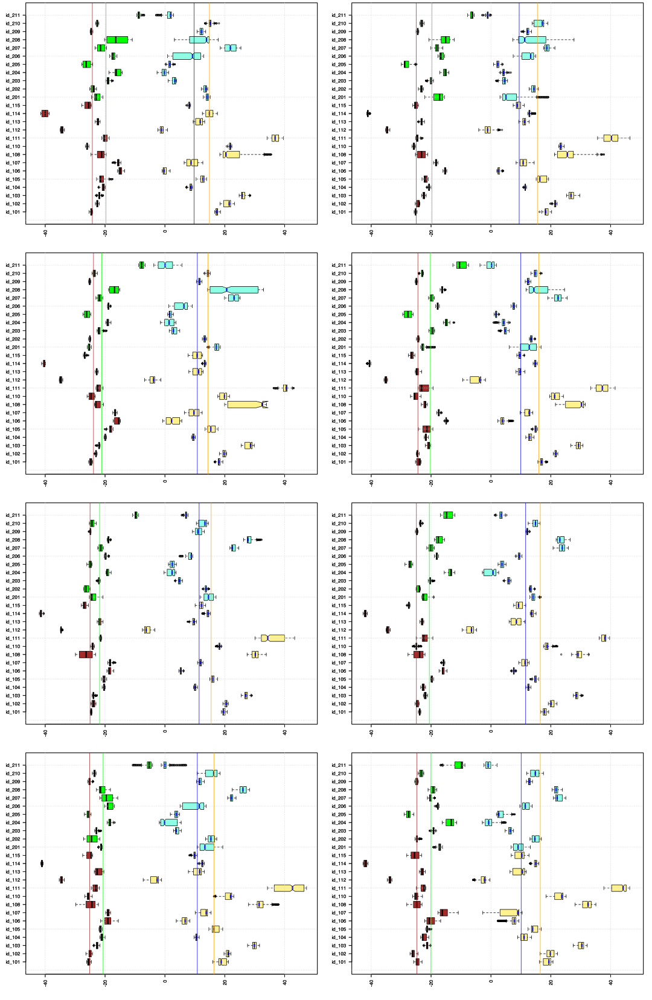
Furthermore we can compare the actual time series for the two intervals. The figure below shows 25 plots for each of the trials with the red color marking the 1st interval and green the 2nd. Vertical lines show boundaries for the four sub-movements within each interval, horizontal lines show means and a blue horizontal line marks the angle value in the 1st frame of the entire performance than a person is in a straight position. Horizontal axis is given in frames with sampling frequency 120 frames per second.
Green is for the thoracic/lumbar angles in the 1st interval (4-7th sub-movements; left to right bow stance); Red is for the thoracic/lumbar angles in the 2nd interval (8-11th sub-movements; right to left bow stance).
Thoracic - two intervals
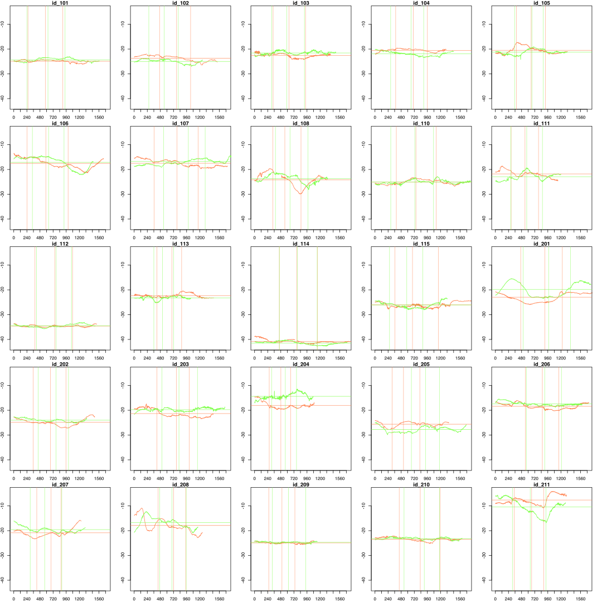
Lumbar - two intervals

Lateral tilt in the thoracic and lumbar areas, grouped by id-trials and sub-movements
Below are boxplots for two intervals of the 2nd step that capture symmetrical body motion: from the left to right bow stance and from the right to left bow stance. The boxplots of these intervals are superimposed for each of the trials. The 1st interval is marked by green color and the 2nd by red (color is not associated with groups).
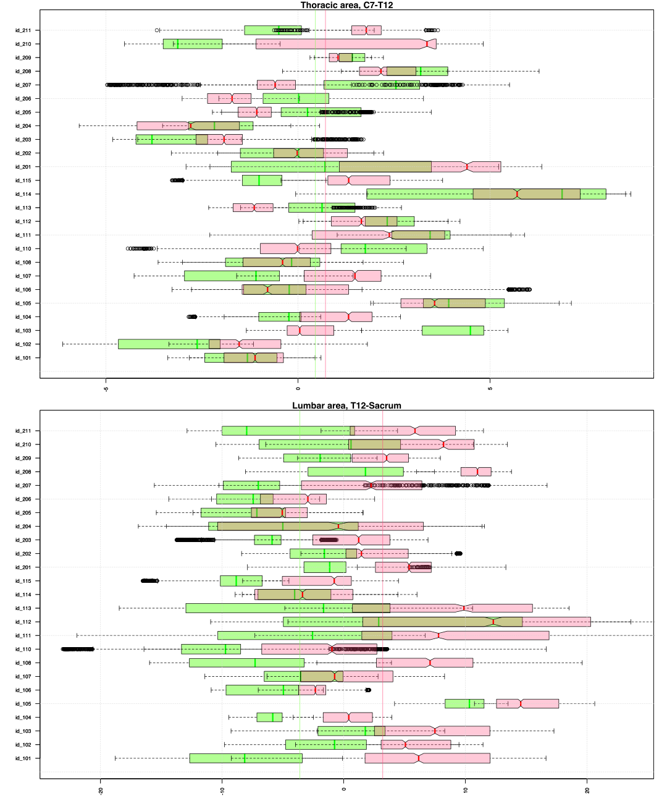
Also, we can differentiate between the different sub-movements within the two intervals and look at them individually. Below are two columns of the boxplots with 4 rows that represent consecutive phases of our two intervals. The 1st column represents the movement from the left to right bow stance (4th - 7th sub-movements), the 2nd column represents the movement from the right to left bow stance (8th - 11th sub-movements).
Brown and green color mark data of the thoracic angles for the 1st and 2nd group. Pale semi-transparent yellow and cyan-green colors mark angles of the lumbar for the 1st and 2nd group.
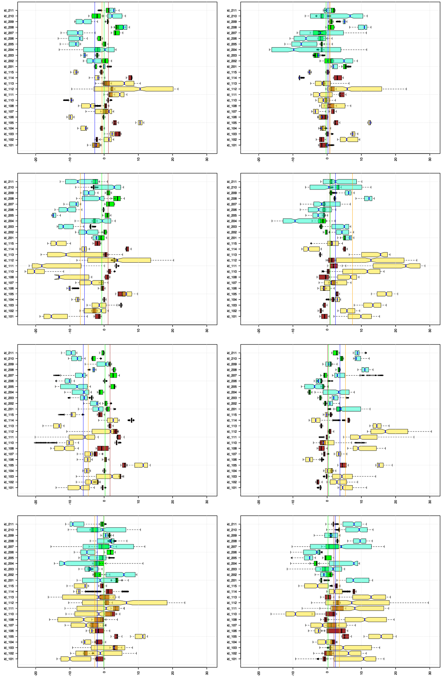
Furthermore we can compare the actual time series for the two intervals. The figure below shows 25 plots for each of the trials with the red color marking the 1st interval and green the 2nd. Vertical lines show boundaries for the four sub-movements within each interval, horizontal lines show means and a blue horizontal line marks the angle value in the 1st frame of the entire performance than a person is in a straight position. Horizontal axis is given in frames with sampling frequency 120 frames per second.
Green is for the thoracic/lumbar angles in the 1st interval (4-7th sub-movements; left to right bow stance); Red is for the thoracic/lumbar angles in the 2nd interval (8-11th sub-movements; right to left bow stance).
Thoracic - two intervals
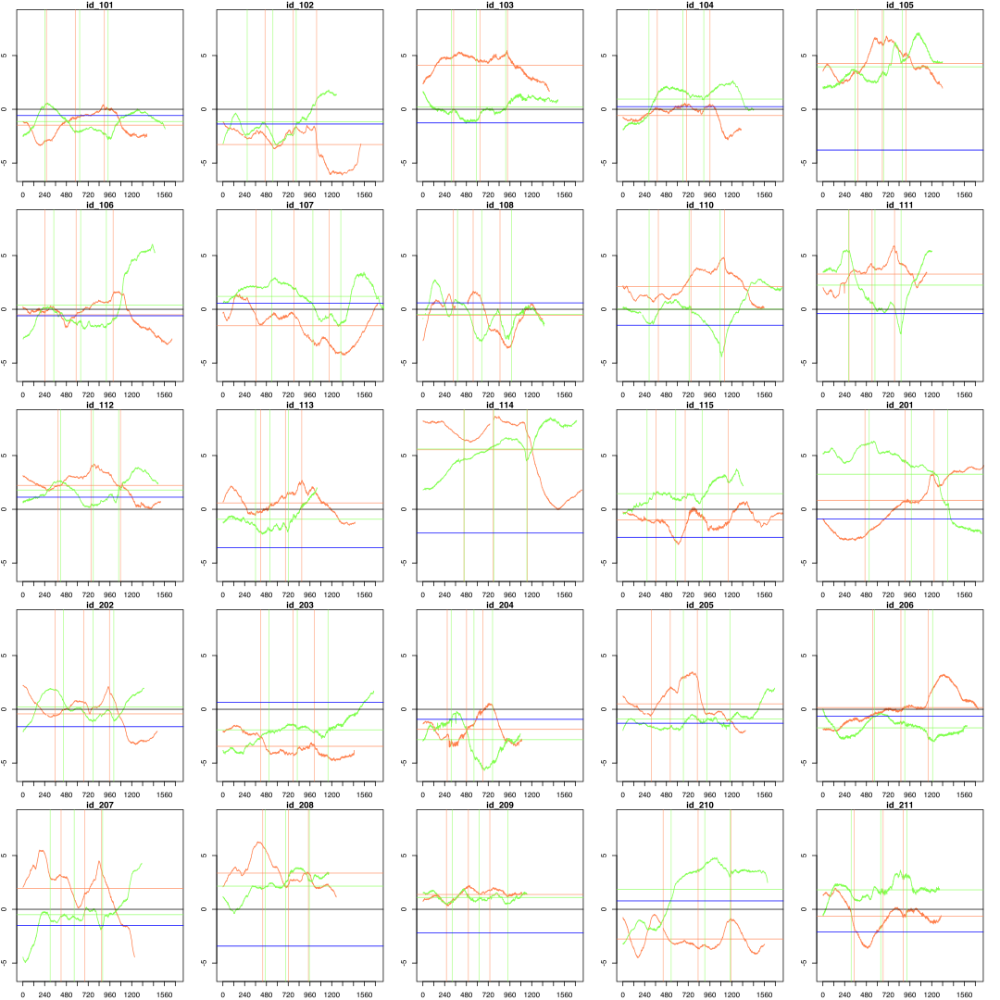
Lumbar - two intervals